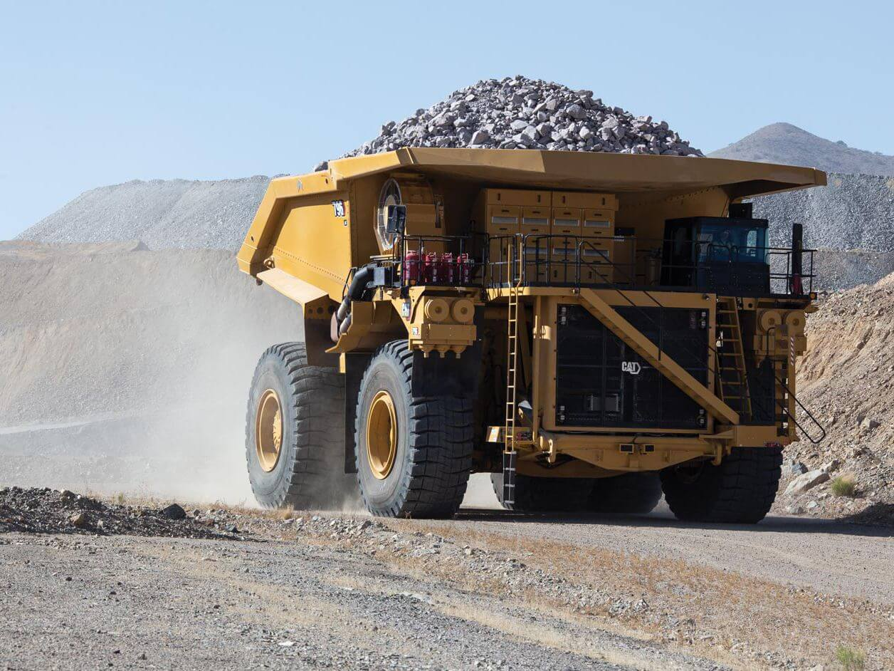

Tonelada Kilómetro por Hora (TKPH).
- Esta es la capacidad de los neumáticos para realizar trabajo
- Esto está relacionado con la generación de calor en el compuesto del neumático.
- El calor destruye la adhesión de la goma y como resultado el neumático falla.
- Fabricantes de neumáticos especifican un TKPH para cada uno de sus especificaciones (construcción, diseño, compuesto) dentro de un tamaño de neumático.
- El TKPH de la faena tiene que ser menor que el TKPH del neumático.
Fórmula
TKPH de operación
=Promedio de carga (Por rueda) X Velocidad promedio diaria de trabajo